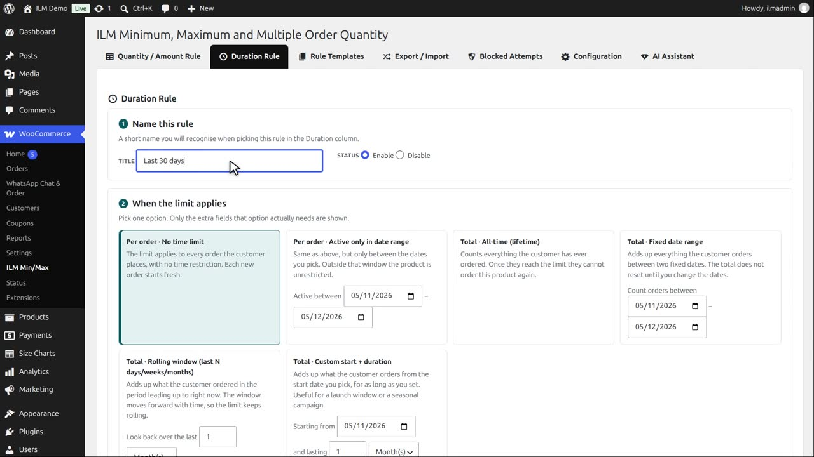
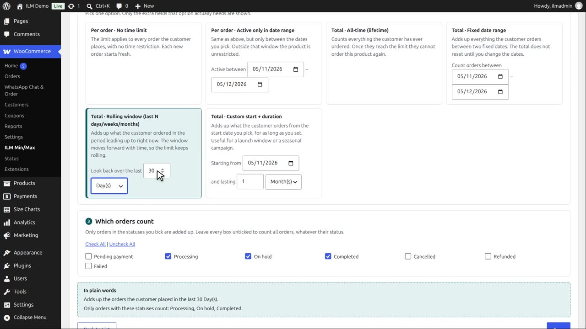
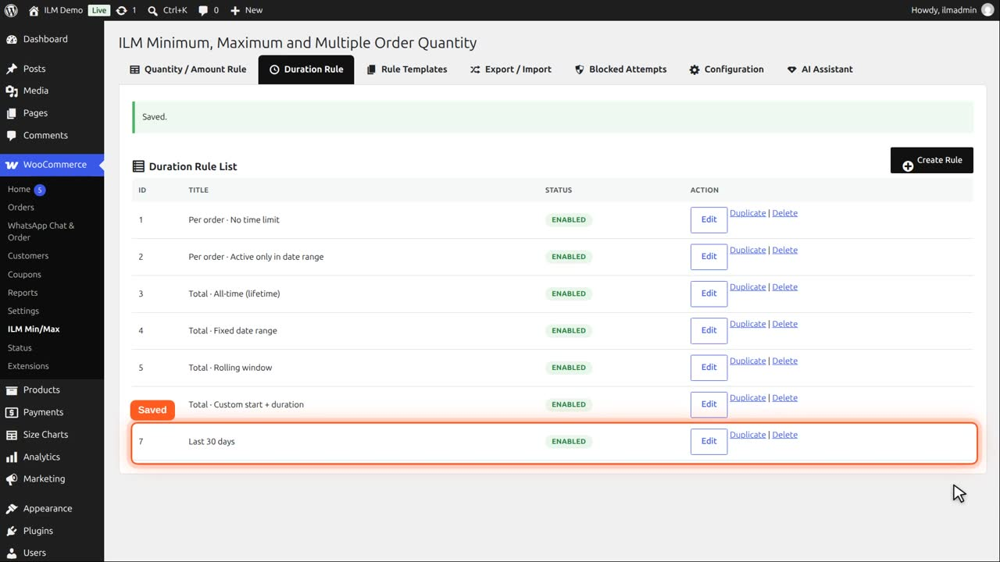
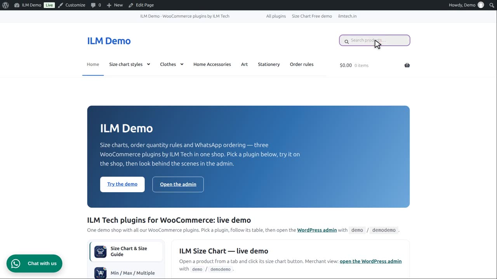

Pro add-on. This feature needs the Pro add-on. See Free and Pro.
| Type | Meaning |
|---|---|
| Total · Rolling window | Adds up what the customer ordered in the last N day(s)/week(s)/month(s)/year(s), counted back from right now. The window keeps moving forward with time. |
Types that need extra input reveal a small field group in place, for example the rolling window's day/week/month/year count:
Create a duration rule named Last thirty days.

Pick Total, rolling window, and set it to thirty days. It could also be weeks, months or years.

Save it.

The Mountain fox cushion, maximum three, now uses it: at most three in any thirty days.

Demo bought two forty days ago, and two ten days ago. Only the order from ten days ago is inside the window, so one is left. As days pass, older orders drop out of the window.